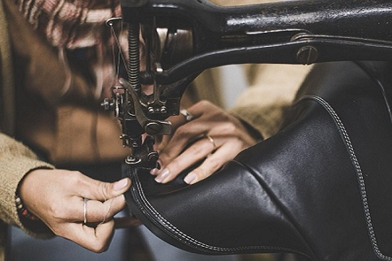

Fabricacion nacional
Nuestros calzados de cuero para dama se elaboran con la combinación perfecta de habilidad artesanal y tecnología de vanguardia. Desde la selección de los mejores cueros locales hasta el meticuloso proceso de fabricación, cada par refleja nuestra dedicación a la calidad y la atención al detalle. Cada zapato cuenta una historia de tradición y excelencia artesanal, asegurando no solo estilo y elegancia, sino también comodidad y durabilidad inigualables.
Los mejores calzados de cuero

¡Bienvenidos a nuestra página web dedicada a los calzados de cuero para dama de fabricación nacional! Aquí encontrarán una cuidada selección de zapatos que combinan la elegancia del cuero con la calidad y artesanía propias de nuestra producción local. Desde clásicos tacones hasta versátiles botines, cada par refleja nuestro compromiso con la excelencia y el estilo. ¡Explora nuestra colección y descubre cómo el cuero nacional puede elevar tu look con sofisticación y comodidad!
Envios a todo el pais
Envios sin costo a todo el pais, rapido y seguro!!